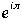

Questions
1. What is a complex number?
2. "Complex numbers are not scalar numbers." Explain this statement.
3. Why did the ISO committee decide to include complex numbers as a basic type? What is so difficult about implementing them in a library?
4. In what sense are CMPLX (on the one hand), and RE and IM (on the other) inverses of each other?
5. Why are there two complex types and two associated libraries?
6. What is the C-type and what kinds of entities are of this type?
7. Suppose zed is of type COMPLEX. What is wrong with the assignment zed := 0?
8. The norm of a complex number is the number divided by its absolute value abs(z). Show that abs(norm(z)) is always equal to one.
9. Write a small program to compute the value of .
10. How may the risk of an overflow be reduced when computing the modulus or abs of a complex number?
11. What criticism was made against the design of WholeStr and WholeConv and why?
12. What other combinations of resistance and capacitance can be made to construct different types of RC circuits? Develop transfer functions for these.
13. Suppose there is also an inductance in the circuit, say on the bottom part of figure 17.3. What does the transfer function become?
14. How many different combinations of on each of resistance, capacitance, and inductance are there (one, two or three at a time).
15. Suppose two resisters are place in series. Write a program to compute the complex (AC) voltage drop across each from a 120 Volt AC source at 60Hz (cycles per second.
16. How does a library module allow a client program to handle its errors?
17. What is the difference between a Decimal type and a BCD type?
18. Add carefully thought out comments to the module DecimalStr in section 17.5.
Problems
19. Re-implement ComplexNumbersO using an array implementation for the ADT.
20. Write and test your own procedures to compute the modulus and argument of a complex number.
21. Write a program to solve quadratic equations of the form ax2 + bx + c = 0. The user should type in the coefficients a, b, and c and the program should compute the root(s), if any, using the quadratic formula x = (-b + d)/2 where d = sqrt(b2 - 4ac). Report answers that are complex numbers automatically in the form a + bi.
22. Modify the above program to allow for complex coefficients as well.
23. Write a program that will calculate the principal square root of a complex number and then display both square roots.
24. Write a program that will compute the principal nth root of the number one (unity) and then display all the nth roots.
25. Some people like to write complex numbers as ordered pairs (a, b). Moreover, earlier in the text there was a module that implemented points as an ADT, and these are also normally written as ordered pairs. Write a module PairIO to read and write ordered pairs in the form (a, b).
26. Modify the module above to read and write any n-tuple (a, b, c, d, ...).
27. Re-do the Complex I/O in this chapter to employ low level scanners and converters as in Whole I/O. Comment on the usefulness of this.
28. Complete the implementation of the module Decimals.
29. Implement the module Polynomials.
30. Implement the module ComplexPolynomials, which is the same as the module Polynomials except that the coefficients and the values of the variables (but not the exponents) may be complex.
31. Add the procedures Divide and Derivative to the module Polynomials.
32. Define and implement a module for date and time I/O.
33. Define and implement a module for date and time arithmetic. You will need to be able to find out how many hours there are between two times, how many days between two dates, add a specified number of hours/minutes/seconds to a time, and so on. (You decide on exactly what needs to be included in the design.)
34. Write your own version of the ISO module RealConv.
35. Write your own version of the ISO module RealStr. If the ISO module LoReal is available on your system, you may elect to use it or not as you wish.
36. Design and write a module to implement the ADT Array in a dynamic fashion. A client program should be able to create an array of specified size dynamically, and add or multiply two of these where the sizes permit.
37. Follow up the last question with a module to do I/O on these dynamic arrays.
38. Design and implement a module to do polynomial I/O. You will have to decide what the format of a polynomial will be for such purposes.
39. Redesign the ComplexIO suite to input and output complex numbers in the form (r,  ) (that is in polar coordinate form.) You may wish to design the modules so that any pair of this form can be read/written, (lower level; can also be used with vectors) and the complex level just makes simple conversions from these into complex numbers.
) (that is in polar coordinate form.) You may wish to design the modules so that any pair of this form can be read/written, (lower level; can also be used with vectors) and the complex level just makes simple conversions from these into complex numbers.
40. Define a number type called a Quat by q = a + bi + cj + dk where i2 = j2 = k2 = ijk = -1. Create a module defining and implementing this data type along with some basic operations.
41. Write the basic I/O module for the type Quat.